This tutorial goes through the whole workflow of
spacemodR on a small example, the surroundings of the
former Metaleurop smelter in northern France:
- get the land cover of the study area,
- build habitat layers,
- describe the food web,
- join both in a
spacemodel, - compute dispersal, then exposure, then risk.
The species used here (sp10, sp12,
sp22) and all the parameter values are invented. They only
show how the functions work.
1. Land cover of the study area
The examples use French data. The same steps apply to other countries with other land cover maps (see the article “Habitat Data Sources”). To ask for a new region or a new data source, please open an issue.
Study area
The study area, or region of interest (ROI), is an sf
polygon. The one of the Metaleurop site is shipped with the package.
data("roi_metaleurop")
## or read your own file
# roi_metaleurop <- sf::st_read("data/metaleurop_roi.geojson")Many French data sets are distributed by department.
get_departements_for_roi() returns the codes of the
departments that intersect the ROI. It needs an internet connection.
dpts <- tryCatch(
get_departements_for_roi(roi_metaleurop),
# do not stop the tutorial if the server cannot be reached
error = function(e) {
message("Could not fetch departments: ", conditionMessage(e))
NULL
}
)
dpts
#> [1] "59" "62"OCS-GE land cover
OCS-GE (Occupation du Sol à Grande Échelle) is the French
land cover database. get_ocsge() returns its polygons for a
ROI, with a cover code (code_cs) and a use code
(code_us), in the Lambert-93 projection (EPSG:2154).
It has two sources:
-
source = "ign"(default) downloads the data of each department from the French National Geographic Institute (IGN), then crops them to the ROI. The argumentyearselects the year of the data, andcache_dirthe directory where the downloaded files are kept, so that each department is downloaded only once. -
source = "fgb"reads the ROI from a remote FlatGeobuf file, given infgb_url.
The download takes some time, so this tutorial uses the result stored in the package.
# sf_site <- get_ocsge(roi_metaleurop, source = "ign")
data(ocsge_metaleurop)The result is an sf object and can be plotted with
ggplot2.
library(ggplot2)
ggplot() +
theme_minimal() +
geom_sf(data = ocsge_metaleurop, aes(fill = code_cs)) +
geom_sf(data = roi_metaleurop, fill = NA, color = "red", size = 1)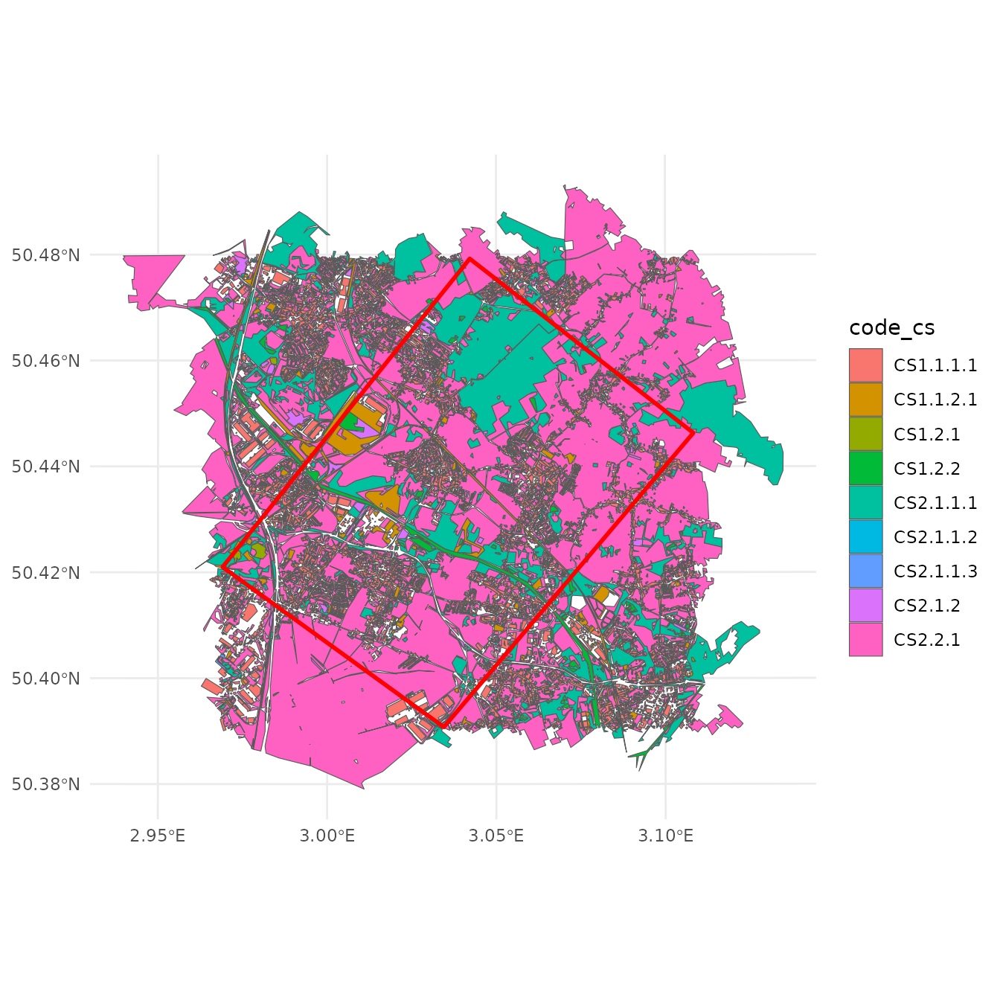
2. Habitat layers
What is a habitat?
A habitat is defined for one species and one activity (feeding, breeding, moving, etc.). The question you study decides what the habitat is. For each species, the landscape is split in three kinds of areas:
- Habitat: areas where the species carries out the activity. Each area has a weight that gives its importance.
- Non-habitat: areas where the species cannot be at all, not even to cross them.
- The rest: areas that are not habitat, but where the species can still be present. For example, a road is not a feeding habitat for a rabbit, but a rabbit can cross it.
The habitat object
We first select some land cover classes: broadleaved forest
(CS2.1.1.1), herbaceous cover (CS2.2.1) and
mineral surfaces (CS1.1.2.1).
layer_CS2111 = ocsge_metaleurop[ocsge_metaleurop$code_cs == "CS2.1.1.1", ]
layer_CS221 = ocsge_metaleurop[ocsge_metaleurop$code_cs == "CS2.2.1", ]
layer_CS1121 = ocsge_metaleurop[ocsge_metaleurop$code_cs == "CS1.1.2.1", ]habitat() creates a habitat object from an
sf object. It is an sf table with one row per
polygon and two extra columns:
-
habitat:TRUEfor a habitat,FALSEfor a non-habitat, -
weight: the weight of the polygon (1 by default).

The same weight can be given to all polygons:
habitat_11 = habitat(layer_CS2111, weight = 0.2)
head(habitat_11)
#> Simple feature collection with 1 feature and 4 fields
#> Geometry type: MULTIPOLYGON
#> Dimension: XY
#> Bounding box: xmin: 697049.4 ymin: 7032094 xmax: 709595.3 ymax: 7043419
#> Projected CRS: RGF93 v1 / Lambert-93
#> habitat weight priority touches geometry
#> 1 TRUE 0.2 1 TRUE MULTIPOLYGON (((697891.4 70...Or one value per polygon, for habitat and for
weight. Random values are used here only to show the
result:
habitat_12 = habitat(
layer_CS2111,
habitat = sample(c(TRUE, FALSE), nrow(layer_CS2111), replace = TRUE),
weight = runif(nrow(layer_CS2111), 0, 10)
)
plot(habitat_12)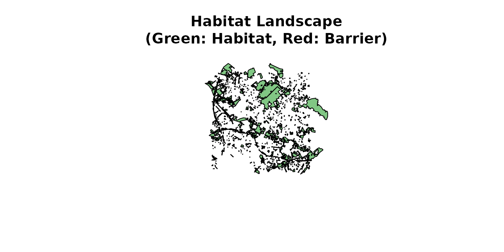
Adding layers one by one
A habitat is often made of several layers. It is then easier to start from an empty object and to add the layers one after the other:
-
add_habitat()adds polygons as habitat, with a weight, -
add_nohabitat()adds polygons as non-habitat.
habitat_20 = habitat() |>
add_habitat(layer_CS2111)
class(habitat_20)
#> [1] "habitat" "sf" "data.frame"
habitat_21 = habitat() |>
add_habitat(layer_CS2111, weight = 0.2)
head(habitat_21)
#> Simple feature collection with 1 feature and 4 fields
#> Geometry type: MULTIPOLYGON
#> Dimension: XY
#> Bounding box: xmin: 697049.4 ymin: 7032094 xmax: 709595.3 ymax: 7043419
#> Projected CRS: RGF93 v1 / Lambert-93
#> habitat weight priority touches geometry
#> 1 TRUE 0.2 1 TRUE MULTIPOLYGON (((697891.4 70...
habitat_22 = habitat() |>
add_habitat(layer_CS2111, weight = 0.2) |>
add_habitat(layer_CS1121, weight = 0.4) |>
add_nohabitat(layer_CS221)
head(habitat_22)
#> Simple feature collection with 3 features and 4 fields
#> Geometry type: MULTIPOLYGON
#> Dimension: XY
#> Bounding box: xmin: 695704.7 ymin: 7031268 xmax: 709595.3 ymax: 7043983
#> Projected CRS: RGF93 v1 / Lambert-93
#> habitat weight priority touches geometry
#> 1 TRUE 0.2 1 TRUE MULTIPOLYGON (((697891.4 70...
#> 2 TRUE 0.4 2 TRUE MULTIPOLYGON (((698440.6 70...
#> 3 FALSE 0.0 3 TRUE MULTIPOLYGON (((698052.4 70...
plot(habitat_22)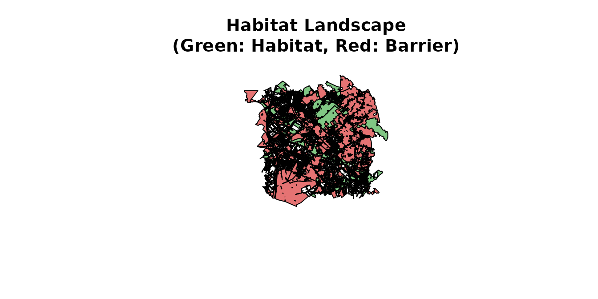
The soil layer
The soil is the first layer of the model: it is where the contaminant comes from. The package contains a raster of the cadmium concentration in the soil of the site (log10 scale).
ground_cd <- load_raster_extdata("ground_concentration_cd_compressed.tif")
terra::plot(ground_cd)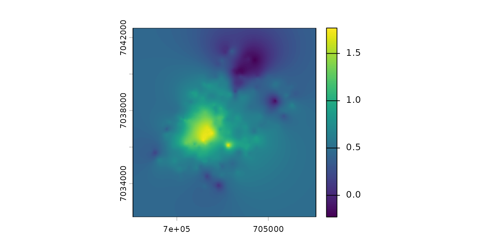
The habitat of the soil layer is built in the same way as for a species. A list of OCS-GE codes makes the selection easier to read.
OCSGE_codes <- list(
forest = c("CS2.1.1.1", "CS2.1.1.2", "CS2.1.1.3", "CS2.1.3"),
grass = "CS2.2.1",
water = "CS1.2.2",
soil = c("CS1.2.1","CS2.1.1.1","CS2.1.1.2","CS2.1.1.3",
"CS2.1.2","CS2.1.3","CS2.2.1","CS2.2.3"),
sealed = c("CS1.1.1.1", "CS1.1.1.2", "CS1.1.2.1")
)Natural soils are habitat, sealed surfaces are non-habitat.
layer_soil_natural = ocsge_metaleurop[ocsge_metaleurop$code_cs %in% OCSGE_codes$soil, ]
layer_soil_artificial = ocsge_metaleurop[ocsge_metaleurop$code_cs %in% OCSGE_codes$sealed, ]
habitat_sol = habitat() |>
add_habitat(layer_soil_natural) |>
add_nohabitat(layer_soil_artificial)
plot(habitat_sol)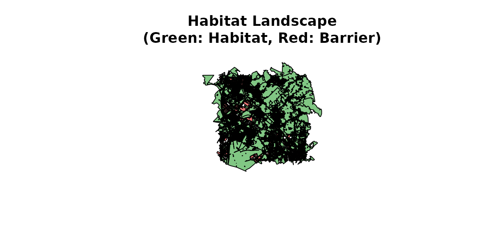
From polygons to rasters
habitat_raster() converts a habitat object
into a raster. Its first argument is a reference raster (here
ground_cd): only its grid is used (resolution, extent and
projection), not its values. In the result:
- habitat pixels take the weight of their polygon,
- non-habitat pixels are
NA, - all other pixels are 0.
rast_sol <- habitat_raster(ground_cd, habitat_sol)
terra::plot(rast_sol)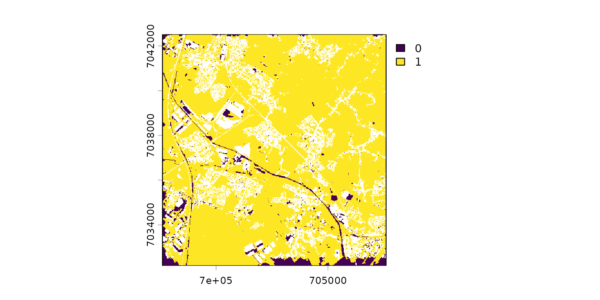
rast_10 <- habitat_raster(ground_cd, habitat_10)
terra::plot(rast_10)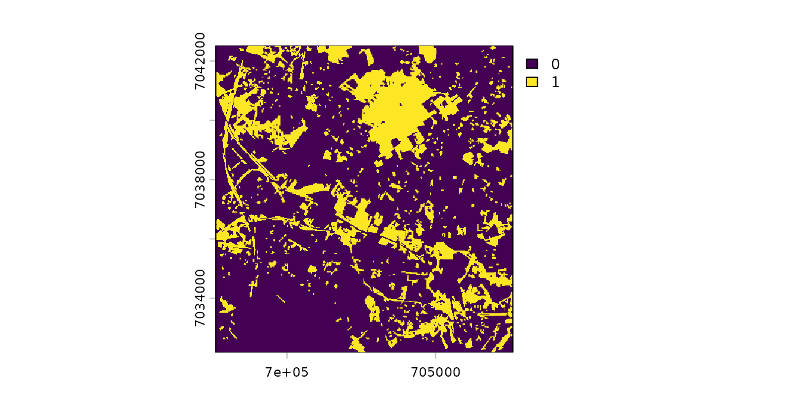
rast_12 <- habitat_raster(ground_cd, habitat_12)
terra::plot(rast_12)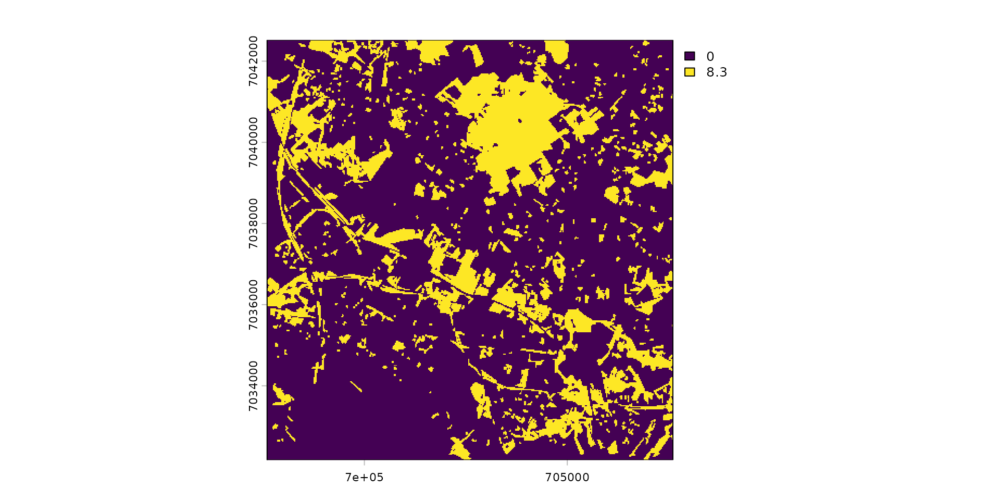
rast_22 <- habitat_raster(ground_cd, habitat_22)
terra::plot(rast_22)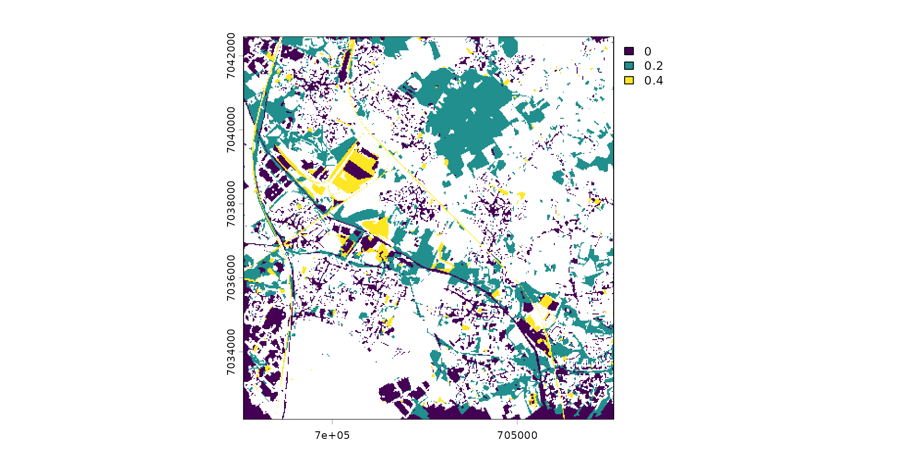
One stack for all layers
raster_stack() joins the rasters in one object, with one
named layer for the soil and one for each species.
stack_habitat <- raster_stack(
raster_list = list(rast_sol, rast_10, rast_12, rast_22),
names = c("sol", "sp10", "sp12", "sp22")
)
terra::plot(stack_habitat)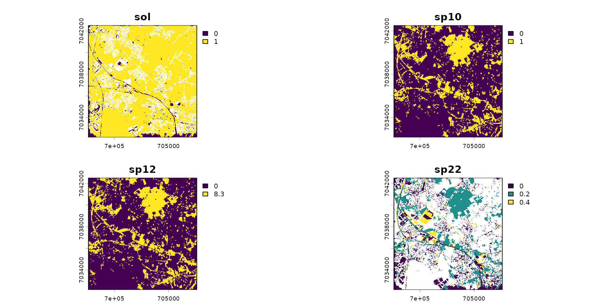
3. Food web
The food web says which layer feeds which other layer. Each link goes from a resource to a consumer and can have a weight. The names must be the names of the layers of the stack.
A food web can be built from a data.frame:
df_raw <- data.frame(
src = c("sol", "sol", "sp10", "sp12"),
target = c("sp10", "sp12", "sp12", "sp22"),
w = c(2, 3, 2, 1))
trophic_from_df <- trophic(df_raw, from = "src", to = "target", weight = "w")
attr(trophic_from_df, "level")
#> sol sp10 sp12 sp22
#> 1 2 3 4Or link by link, with add_link():
trophic_df <- trophic() |>
add_link("sol", "sp10", 2) |>
add_link("sol", "sp12", 3) |>
add_link("sp10", "sp12", 2) |>
add_link("sp12", "sp22")
attr(trophic_df, "level")
#> sol sp10 sp12 sp22
#> 1 2 3 4The attribute level gives the trophic level of each
layer. The food web must have no cycle.
plot() draws the food web. With
shift = TRUE, the trophic levels are shifted along the
horizontal axis so that the arrows do not overlap.
plot(trophic_df, shift = FALSE)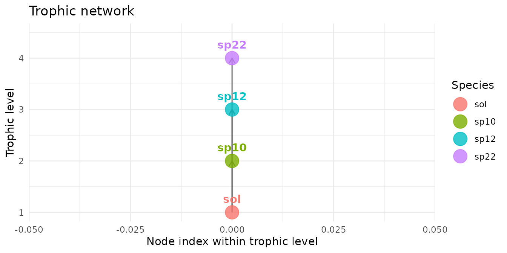
plot(trophic_df, shift = TRUE)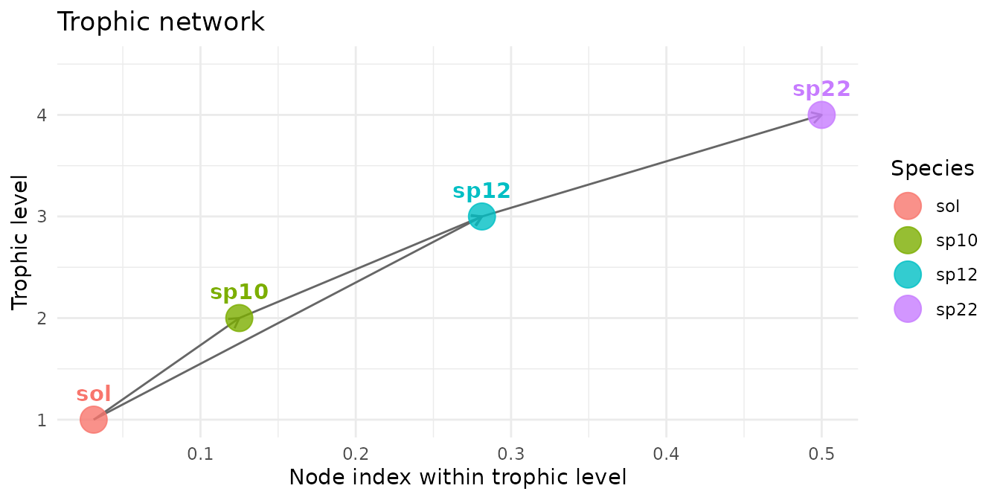
4. The spacemodel
A spacemodel joins the two objects built above:
- the stack of rasters, one layer for the soil and one for each species,
- the food web that links these layers.
spcmdl_habitat <- spacemodel(stack_habitat, trophic_df)
color_habitat <- colorRampPalette(c("white", "#169E19"))(255)
terra::plot(spcmdl_habitat, col = color_habitat)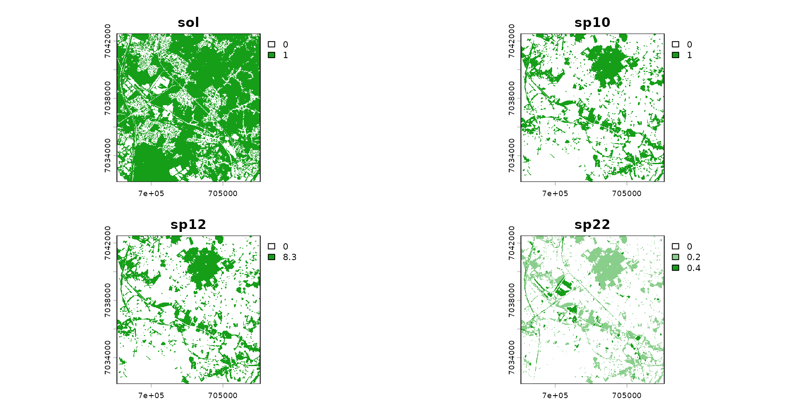
5. Dispersal
Animals use the surroundings of their habitat.
dispersal() spreads the habitat of a species around each
pixel with a dispersal kernel. In this version, dispersal does not
depend on the food web.
compute_kernel() builds a Gaussian kernel from its
standard deviation in meters (radius), the pixel size of
the raster in meters (GSD) and the number of standard
deviations covered on each side (size_std).
k_sp10 <- compute_kernel(radius = 10, GSD = 25, size_std = 1.5)
k_sp12 <- compute_kernel(radius = 100, GSD = 25, size_std = 0.5)
k_sp22 <- compute_kernel(radius = 200, GSD = 25, size_std = 0.1)
spcmdl_dispersal <- spcmdl_habitat |>
dispersal("sp10", method = "convolution", method_option = list(kernel = k_sp10)) |>
dispersal("sp12", method = "convolution", method_option = list(kernel = k_sp12)) |>
dispersal("sp22", method = "convolution", method_option = list(kernel = k_sp22))
color_dispersal <- colorRampPalette(c("white", "#166C9E"))(255)
terra::plot(spcmdl_dispersal, col = color_dispersal)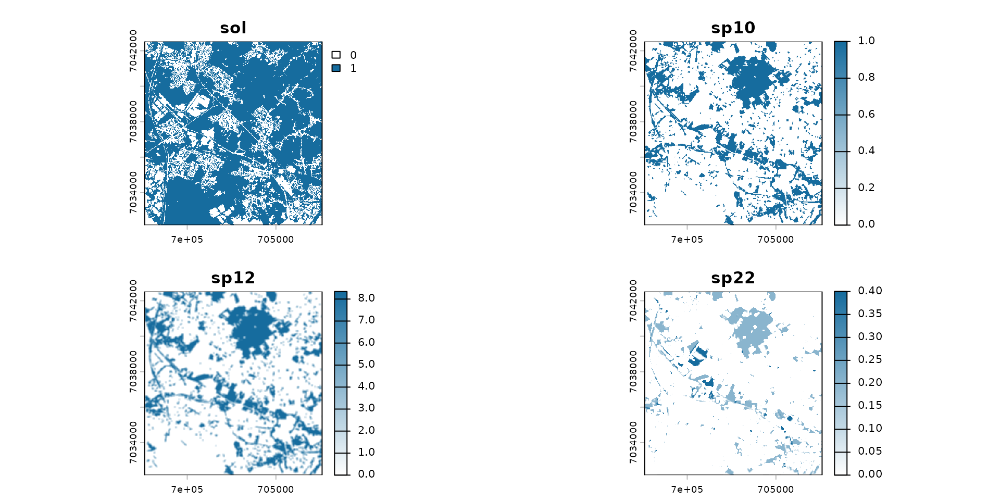
6. Exposure
The contaminant now moves from the soil to the species, along the links of the food web.
First, the soil layer receives the cadmium concentration:
spcmdl_dispersal[["sol"]][] <- ground_cd
terra::plot(spcmdl_dispersal["sol"])
Each consumer looks for its food around its position. This is
described by one kernel per layer (NA for the soil, which
does not move):
kernels <- list(
sol = NA,
sp10 = k_sp10,
sp12 = k_sp12,
sp22 = k_sp22
)The links of the food web are stored in the spacemodel:
attr(spcmdl_dispersal, "trophic_tbl")
#> link weight
#> sp10 sol, sp10 2
#> sp12 sol, sp12 3
#> sp121 sp10, sp12 2
#> sp22 sp12, sp22 1A flux gives, for each link, how the value of the resource becomes
the value of the consumer. It is a number (a coefficient) or a formula
of x, the value of the resource. flux() sets a
default for all links, and add_flux() changes it for some
of them. A rule given with from and to
replaces a rule given with to only.
test_fluxes <- flux(spcmdl_dispersal, default = 1) |>
# from the soil to sp10: coefficient 0.4
add_flux(from = "sol", to = "sp10", value = 0.4) |>
# all links to sp12: coefficient 0.1
add_flux(to = "sp12", value = 0.1) |>
# except when sp12 feeds on sp10: a formula
add_flux(from = "sp10", to = "sp12", value = ~ x^2/10) |>
# all links to sp22: a formula
add_flux(to = "sp22", value = ~ x^0.1)
spcmdl_transfer <- transfer(spcmdl_dispersal, kernels, test_fluxes)
color_transfer <- colorRampPalette(c("white", "#A33D0A"))(255)
terra::plot(spcmdl_transfer, col = color_transfer)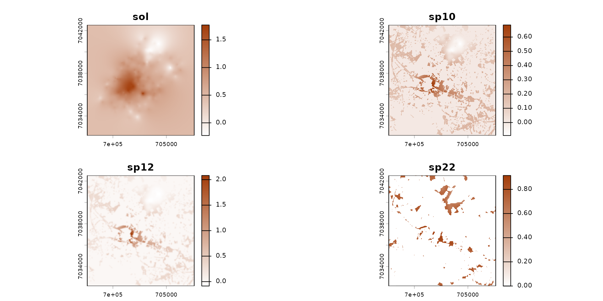
7. Risk
The values are on a log10 scale. To compare them with toxicity
thresholds, we go back to concentrations. An operation on a spacemodel
returns a simple stack of rasters, so the food web is attached again
with spacemodel().
spcmdl_10 <- 10^spcmdl_transfer
spcmdl_10 <- spacemodel(spcmdl_10, attr(spcmdl_transfer, "trophic_tbl"))The risk index of a layer is its concentration divided by its toxicity threshold (for example a TRV or a PNEC). An index above 1 means that the threshold is exceeded. Give the thresholds as a named vector and put them in the order of the layers before the division.
# thresholds of each layer (invented values)
thresholds <- c(sol = 1, sp10 = 1.5, sp12 = 1.5, sp22 = 1.5)
# same order as the layers of the spacemodel
ordered_thresholds <- thresholds[names(spcmdl_10)]
# risk index = concentration / threshold
spcmdl_risk <- spcmdl_10 / ordered_thresholds
spcmdl_risk <- spacemodel(spcmdl_risk, attr(spcmdl_transfer, "trophic_tbl"))
breaks_risk <- c(0, 0.1, 0.5, 1, 5, 10, Inf)
cols_risk <- c(
"darkgreen", # 0 - 0.1
"green", # 0.1 - 0.5
"lightgreen", # 0.5 - 1
"yellow", # 1 - 5
"saddlebrown", # 5 - 10
"#4A2C2A" # > 10
)
terra::plot(spcmdl_risk,
breaks = breaks_risk,
col = cols_risk)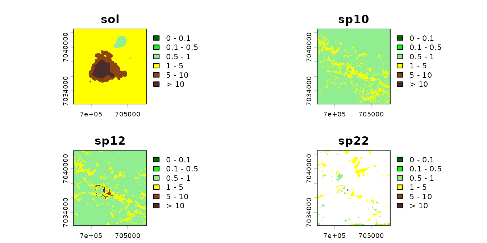
Going further
The articles of the package website give more details on each step: soil maps by kriging, habitat layers and their data sources, connectivity with Omniscape, food intake, and the estimation of transfer parameters from field data.